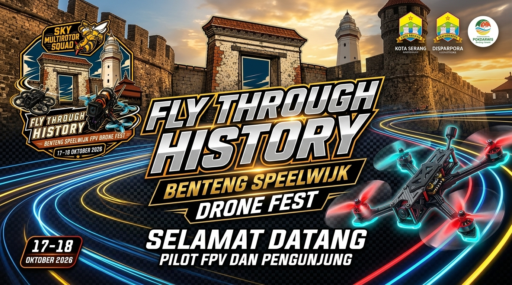
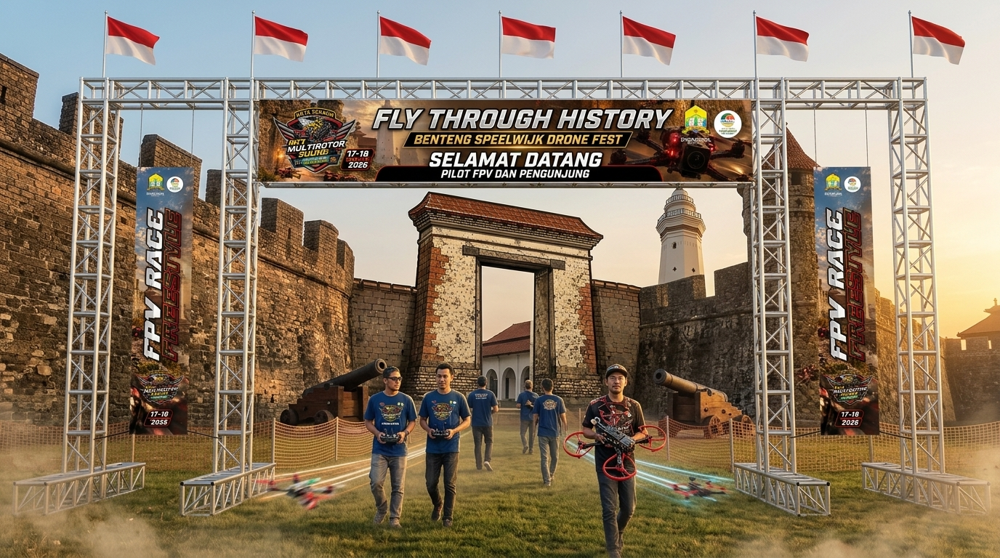

Konsep desain spanduk gerbang masuk utama, tata letak proporsional, dan simulasi 3D rigging truss outdoor.

Logo resmi badge event, maskot lebah SMS, cagar budaya benteng, dan badge tanggal 17-18 Oktober 2026.
Headline "FLY THROUGH HISTORY", sub-headline "BENTENG SPEELWIJK DRONE FEST", serta ucapan Selamat Datang.
Logo Pemkot Serang, Disparpora, Pokdarwis, serta aksi drone FPV balap dengan trail neon.

Simulasi pemasangan spanduk utama 600cm × 100cm dipadukan dengan standing banner tiang 60cm × 300cm pada rigging truss outdoor.
/public/logo-event-speelwijk-2026.jpg.